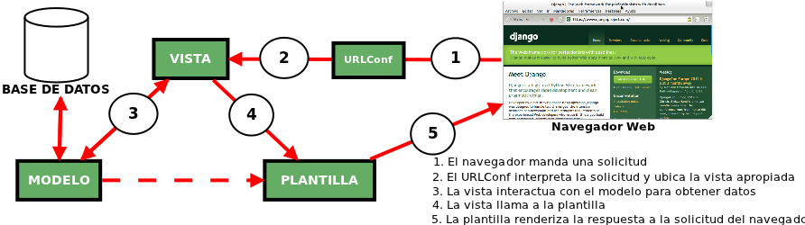

Django impulsa el desarrollo de código limpio al promover buenas prácticas de desarrollo web, sigue el principio DRY (don't repeat yourself), conocido también como una vez y sólo una.
Según este principio toda pieza de información nunca debería ser duplicada debido a que la duplicación incrementa la dificultad en los cambios y evolución posterior, puede perjudicar la claridad y crear un espacio para posibles inconsistencias.
Django usa una modificación de la arquitectura Model-View-Controler (MVC), llamada Model-Template-View (MTV), está forma de trabajar permite que sea pragmático. Esto se debe a que los desarrolladores no tuvieron la intención de seguir algún patron de desarrollo, sino hacer el framework lo más funcional posible.
Para empezar a entender MTV debemos fijarnos en la analogía con MVC
El modelo en Django sigue siendo modelo
La vista en Django se llama Plantilla (Template)
El controlador en Django se llama Vista
El modelo
El modelo define los datos almacenados, se encuentra en forma de clases de Python, cada tipo de dato que debe ser almacenado se encuentra en una variable con ciertos parámetros, posee métodos también. Todo esto permite indicar y controlar el comportamiento de los datos.
La vista
La vista se presenta en forma de funciones en Python, su propósito es determinar que datos serán visualizados, entre otras cosas. El ORM (Object-Relational mapping —técnica de programación para convertir datos entre el sistema de tipos utilizado en un lenguaje de programación orientado a objetos y la utilización de una base de datos relacional, utilizando un motor de persistencia. En la práctica esto crea una base de datos orientada a objetos virtual, sobre la base de datos relacional. Esto posibilita el uso de las características propias de la orientación a objetos, básicamente herencia y polimorfismo) de Django permite escribir código Python en lugar de SQL para hacer las consultas que necesita la vista.
La vista también se encarga de tareas conocidas como el envío de correo electrónico, la autenticación con servicios externos y la validación de datos a través de formularios. Lo mas importante a entender con respecto a la vista es que no tiene nada que ver con el estilo de presentación de los datos, sólo se encarga de los datos, la presentación es tarea de la plantilla.
La plantilla
La plantilla es básicamente una página HTML con algunas etiquetas extras propias de Django. Sin embargo no solamente crea contenido en HTML, sino también XML, CSS, Javascript, CSV, entre otros.
La plantilla recibe los datos de la vista y luego los organiza para la presentación al navegador web. Las etiquetas que Django usa para las plantillas permiten que sea flexible para los diseñadores del frontend, incluso tiene estructuras de datos como if, por por si es necesaria una presentación lógica de los datos, estas estructuras son límitadas para evitar un desorden poniendo cualquier tipo de código Python.
Esto permite que la lógica del sistema siga permaneciendo en la vista.
La configuración de las rutas
Django posee un mapeo de URLs que permite controlar el despliegue de las vistas, esta configuración es conocida como URLConf. El trabajo del URLConf es leer la URL que el usuario solicitó, encontrar la vista apropiada para la solicitud y pasar cualquier variable que la vista necesite para completar su trabajo. El URLConf esta construido con expresiones regulares en Python y sigue la filosofia de Python: Explicito es mejor que implícito. Este URLConf permite que las rutas que maneje Django seán agradables y entendibles para el usuario.
Si consideramos al URLConf en el esquema anterior tendríamos este resultado más completo.

Archivos predeterminados
Es importante entender el propósito de los archivos que se crean de manera predeterminada, en un proyecto. Así mismo cada proyecto necesita de aplicaciones donde podamos manejar los modelos y las vistas. Un proyecto pude contener más de una aplicacion y cada una de ellas cuanta con sus propios archivos predeterminados.
A continuación se presenta la descripción de cada uno de estos archivos para los dos casos mencionados:
Archivos del proyecto
__init__.py
archivo vacío que le dice a Python que debe considerar este directorio como un paquete de Python
manage.py
contiene una porción de código que permite interactuar por medio de la linea de comando con el proyecto de Django
settings.py
contiene todas las configuraciones para el proyecto
urls.py
contiene las rutas que están disponibles en el proyecto, manejado por URLConf
Archivos de la aplicación
__init__.py
archivo vacío que le dice a Python que debe considerar este directorio como un paquete de Python
models.py
En este archivo se declaran las clases del modelo
views.py
En este archivo se declaran las funciones de la vista
test.py
En este archivo se declaran las pruebas necesarias para la aplicación